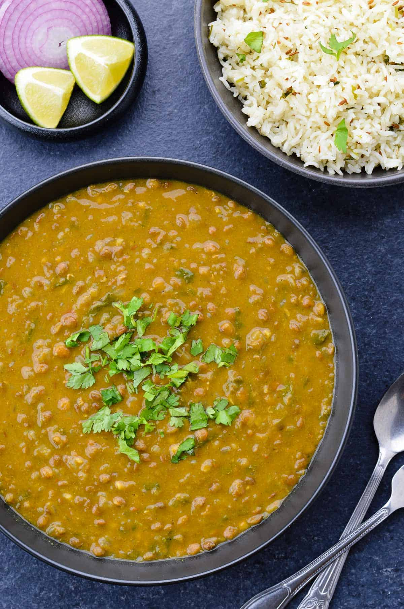

Masoor Dal (Instant Pot)

Masoor dal is a staple of Indian households of every class and region. Here is my recipe using an Instant Pot instead of a traditional pressure cooker.
Ingredients:
- Masoor lentils
- Tomatoes
- Spices (Coriander, Cumin, Red chili powder)
- Garlic and ginger
Steps:
- Saute garlic and ginger
- Add tomatoes and spices, and water as needed
- Add lentils and cook on "High" for 5 minutes
- Let sit for 5 minutes before releasing remaining pressure manually